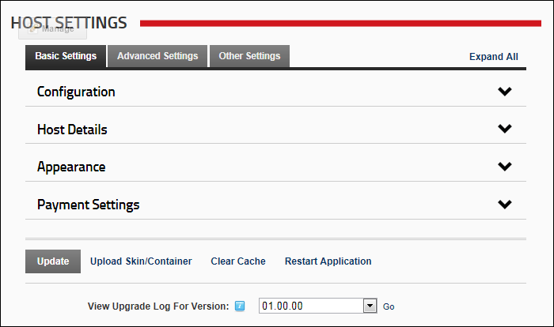

The Host Settings page, located on the Host Console, enables SuperUsers to configure settings that apply to the host site, as well as set the default settings for each new site that is created including site design, proxy settings, hosting space, SMTP server settings and more.

The Host Settings Page